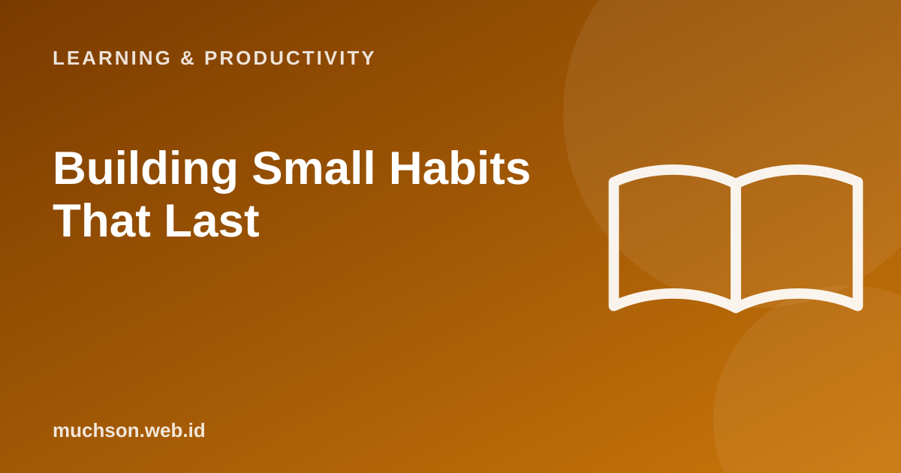

Home › Articles › Learning & Productivity
Learning & ProductivityBuilding Small Habits That Last
New year, big resolutions: an hour of exercise, a book a week, learning to code every night. Two weeks later everything has stopped. The problem is not the intention but the size of the first step. Start smaller than you think.

Three principles
Text description of the diagram
- Start very small: two minutes, one page, five questions
- Tie it to an old habit: after brushing my teeth, I...
- Celebrate and record: mark it on the calendar
The power of small progress
Design your habit
Common mistakes
FAQ
How long does it take to form a habit?
There is no magic number. Research shows a wide range, from a few weeks to several months, depending on the habit and the person.
What if I fail for a while?
That is normal. Come back as soon as you can and shrink the goal so it is easy to restart.
Do habit-tracking apps help?
They can, as long as they are simple. A calendar and ticks on paper work too.